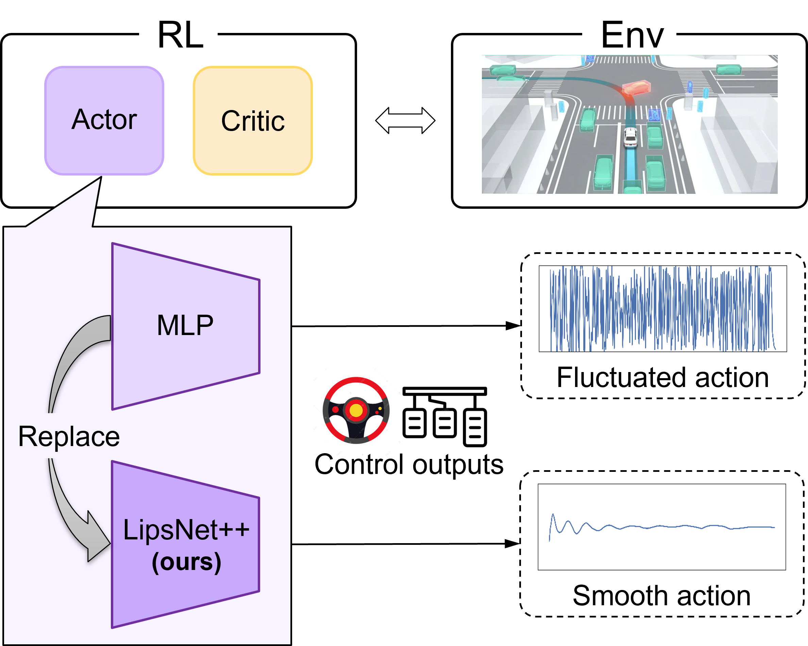
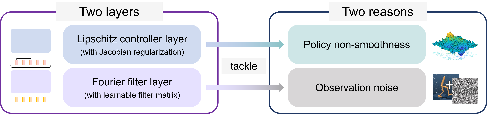
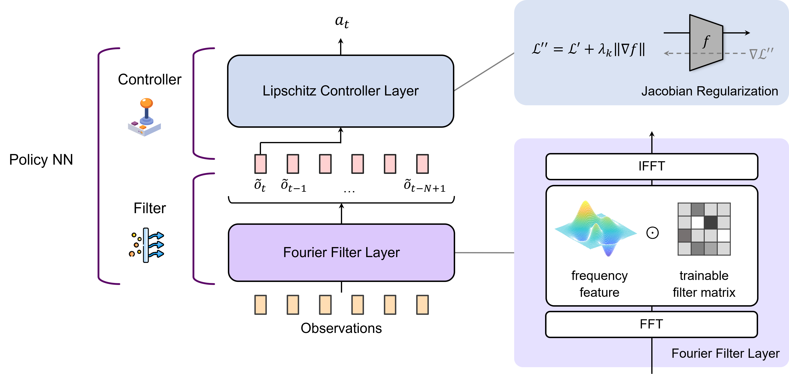
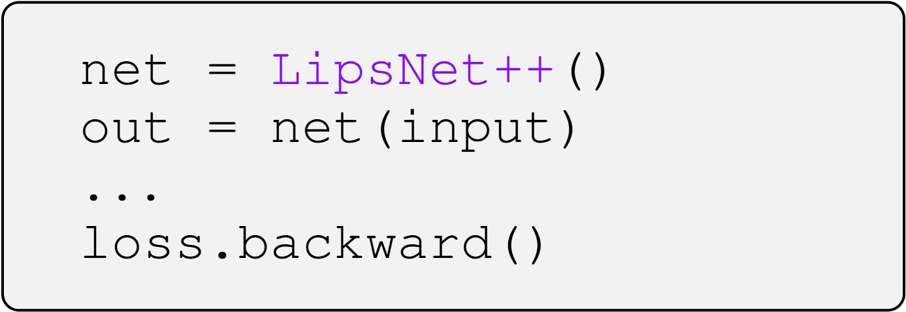

Deep reinforcement learning (RL) is an effective approach for decision-making and control tasks. However, RL-trained policies often suffer from the action fluctuation problem, resulting in severe actuator wear, safety risks, and performance degradation in real-world applications. In this paper, we identified the two fundamental reasons of action fluctuation: observation noise and policy non-smoothness. Then, we proposed a novel policy network, LipsNet++, integrating a Fourier filter layer and a Lipschitz controller layer to mitigate these two factors decoupledly. The filter layer incorporates a trainable filter matrix that automatically extracts important frequencies while suppressing noise frequencies in the observations. The controller layer introduces a Jacobian regularization technique to achieve a low Lipschitz constant, ensuring smooth fitting of a policy function. These two layers function analogously to the filter and controller in classical control theory, suggesting that filtering and control capabilities can be seamlessly integrated into a single policy network. Both simulated and real-world experiments demonstrate that LipsNet++ achieves state-of-the-art noise robustness and action smoothness.
The paper propose LipsNet++, a policy network incorporating a Fourier filter layer and Lipschitz controller layer. It can be used as policy network in most actor-critic RL algorithms to obtain smoother control action in real-world applications.
Our paper identifies the two fundamental reasons that causes action fluctuation:
Our paper proposes two layers to address the above two reasons, respectively.
There are two layers incorporated in LipsNet++:
The two layers respectively tackle the two fundamental reasons causing action fluctuation. These two layers function analogously to the filter and controller in classical control theory, suggesting that filtering and control capabilities can be seamlessly integrated into a single policy network.
This is a real-world application on the vehicle-robot driving task. The vehicle is controlled by the policy network, i.e. LipsNet++, trained by RL.
Click to watch the video:
The user-friendly packaging of LipsNet++ does not disturb original RL algorithm, allowing application in various RL algorithms. Practitioners can use LipsNet++ just like an MLP.
@inproceedings{lipsnet_v2,
title={LipsNet++: Unifying Filter and Controller into a Policy Network},
author={Song, Xujie and Chen, Liangfa and Liu, Tong and Wang, Wenxuan and Wang, Yinuo and Qin, Shentao and Ma, Yinsong and Duan, Jingliang and Li, Shengbo Eben},
booktitle={International Conference on Machine Learning},
year={2025},
organization={PMLR}
}